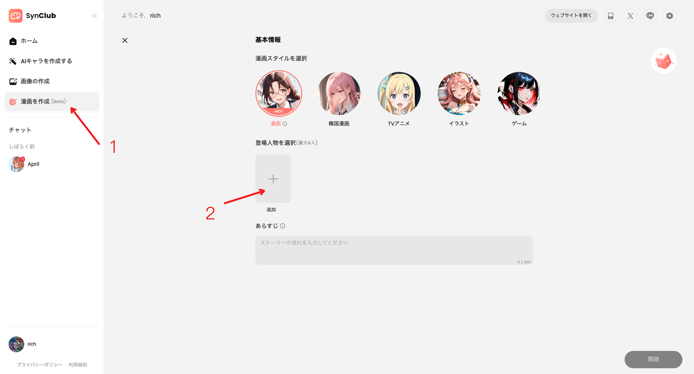

Currently, the AI comic feature provides a better experience on PC and is only available in the Japan region. Therefore, you'll need to switch to the Japan region in the website settings to try it. After switching to the Japan region, you can use a browser translation plugin to translate the Japanese interface into English.
- Open the homepage (https://www.synclubaichat.com/home) and register for an account.
- Switch the region to Japan (this is done by changing the language setting).
-
Select the comic creation feature to start your creative experience.
- Add Comic Characters 
- For a quick experience, select the official preset characters here.
- Enter your story script and click "Generate."
-
Notes
-
On the comic creation screen, you can click the icon in the top-right corner to view a detailed introduction to the features.
-
When selecting characters, you can also choose to use custom characters for your creation. To do this, you'll need to generate your custom characters beforehand in the Custom Character section.
-
On the comic creation screen, you can click the icon in the top-right corner to view a detailed introduction to the features.